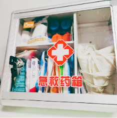
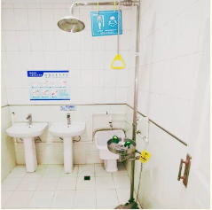

Overview
Laboratory safety
Configuration list
Laboratory safety education
Laboratory system safety
Examples of our all-step protection
Hardware security
Risk analysis of the hardware
Overview
Ensuring safety is the primary prerequisite for any scientific experiment. All the work of the NEFU_China has been carried out orderly under the premise to ensure safety. In this section, we present our safety strategy from three aspects: laboratory safety, experimental design security and hardware security.Laboratory safet
Laboratory safety
Safety of laboratory reagents and instrumentsAll our experiments are carried out in a BL1 laboratory. The facility is provided with various safety provisions, including washbasins, eye wash stations, first aid kits, medical supplies, fire extinguishers and sand. All of the experimental reagents purchased by us pursue rigorous safety standards. For example, we chose Goldview as our nucleic acid dye instead of using ethidium bromide, which is highly carcinogenic.
Configuration list
Table 1
| No. | Name | Specification | Quantity |
| 1 | Iodophor disinfectant | Dose | 30 |
| 2 | Cleaning wipe | Piece | 2 |
| 3 | Medical alcohol cotton wipes | Piece (6 cm × 3 cm) | 10 |
| 4 | Medical skim cotton ball | 5 g/pack | 2 |
| 5 | Hydrogen peroxide | 100 ml/bottle | 1 |
| 6 | Boric acid solution | Bottle | 1 |
| 7 | Sodium bicarbonate solution | 100 ml/bottle | 1 |
| 8 | Band aid | Piece (7.2 cm × 1.9 cm) | 30 |
| 9 | Medical elastic bandage | Roll (8cm × 400cm) | 3 |
| 10 | Medical gauze block(small size) | Piece (7.5 cm × 7.5 cm - 8 layers) | 5 |
| 11 | Triangular bandage | Pack (96 cm × 96 cm × 136 cm) | 1 |
| 12 | Medical ventilatory tape | Roll (1.25 cm × 450 cm) | 1 |
| 13 | Medical application(small size) | Piece (6 cm × 7 cm) | 6 |
| 14 | Buckle tourniquet | Roll (2.5 cm × 40 cm) | 1 |
| 15 | Burn application | Pack (60 cm × 40 cm) | 1 |
| 16 | Burn application | Roll (2.5 cm × 40 cm) | 1 |
| 17 | Eye lotion | 250 ml/bottle | 1 |
| 18 | Instantaneous cold ice bag | 160 g/pack | 1 |
| 19 | Artificial cell healing | 5 g/branch | 1 |
| 20 | Breathing mask | Piece (20 cm × 20 cm) | 1 |
| 21 | First aid blanket | Piece (160 cm × 210 cm) | 1 |
| 22 | Disposable medical rubber | Box | 5 |
| 23 | Plastic application material | Set | 1 |
| 24 | Safety pin | Pack (10 pieces) | 1 |
| 25 | Round head scissors | Pair (15 cm) | 1 |
| 26 | Flashlight (including battery) | Pair (15 cm) | 1 |
| 27 | High frequency rescue whistle | Set | 1 |
| 28 | First aid manual | Volume | 1 |
| 29 | CD-ROM of first aid knowledge | Piece | 1 |
| 30 | PE bag-G type | Bag | 4 |
| 31 | After-sales service card | Piece | 1 |
| 32 | BC-L-004A outer box | Box | 1 |
Our laboratory abides by Article 35 of Chapter IV of the Biosafety Law of the People’s Republic of China: An entity engaged in biotechnology research development, and application activities shall be responsible for the security of its biotechnology application, research, development, and adopt biosecurity risk prevention and control measures formulate rules of biosecurity training, tracing and inspections, regular reporting, and other work, and strengthen process management.
Laboratory safety education
Before entering the laboratory, all team members must have adequate biological knowledge and pass the laboratory safety tests required by the College of Life Sciences. Before conducting any experimental activity in the laboratory, all participants must understand the established protocols and procedures associated with the experiment. Graduate students and laboratory lecturers provide the guidance and instruction that are necessary to impart this knowledge.
Laboratory system safety
We have established a strict duty system. Every day, the students on duty need to ensure the laboratory to be clean and well-organized, dispose all the experimental garbage after work, and strictly check the switch status of all experimental instruments before vacating the laboratory. In addition, we routinely carry out an all-round cleaning of the laboratory by all the staff.
Examples of our all-step protection
The laboratory has established dedicated areas for conducting nucleic acid electrophoresis and protein electrophoresis. Prior to each experimental operation, researchers wear disposable butyronitrile gloves, and any tool that come into contact with the workbench are left there. Besides, 75% alcohol solution will be sprayed regularly to clean up research benches. In the context of aseptic operations, it is necessary to ensure that flammable materials are not brought into close proximity of an open flame. Ultraviolet sterilization will be carried out on the clean bench before and after microbiological experimental operations, such as colony PCR.
Experimental design security
In this study, Escherichia coli (E. coli) strains DH5α, BL21 and BW25113 were employed as model organisms. E. coli is a commonly utilized microorganism in scientific research. We strictly abide by the laboratory operating standards to prevent laboratory microbes from escaping into the environment. Our synthetic product, 7-methylxanthine (C7H8N4O2, 7-MX), is one of the natural metabolites of caffeine (1, 3, 7-trimethylxanthine). Its effectiveness in suppressing myopia and safety of long-term utilization have been previously demonstrated. The principle of the DNA operation technique used by us is based on the utilization of IIS restriction endonuclease technology, which is a safe and reliable DNA recombination technique. Laboratory staff strictly abide by laboratory safety guidelines to prevent any of our genetically modified microorganisms from polluting the environment.
Hardware security
All our work is covered by the White List. The ndm genes come from Pseudomonas aeruginosa CBB5. We improve the original gene and replace the rare codons unfavored by E. coli so that it can be well expressed in bacteria with a reduced metabolic burden.
Risk analysis of the hardware
Risk analysis of the hardware
| Hardware | Risk Analysis |
| ndmA | Origin from CBB5, no harm to human health and the environment. |
| ndmD | Origin from CBB5, no harm to human health and the environment. |
| ndnB | Origin from CBB5, no harm to human health and the environment. |
| frmB | Origin from CBB5, no harm to human health and the environment. |
| frmA | Origin from CBB5, no harm to human health and the environment. |
| FDH | No harm to human health and the environment. |
| lac O | No harm to human health and the environment. |
| ndmDt | No harm to human health and the environment. |
| T7 terminator | No harm to human health and the environment. |
| trnB terminator | No harm to human health and the environment. |
| P107 promoter | No harm to human health and the environment. |



Fig. 1. First-aid kit
Fig. 2. Remedies and equipment
Fig. 3. Eye bath